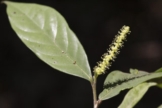
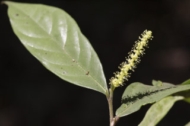
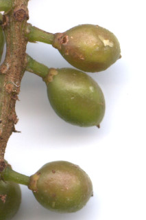
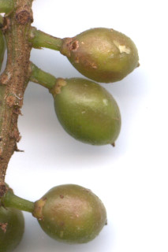

Trees about 10 m tall.
ಅಂದಾಜು 10 ಮೀ. ಎತ್ತರದವರೆವಿಗೆ ಬೆಳೆಯುವ ಮರಗಳು.
10 മീറ്റര് വരെ ഉയരമുളള മരങ്ങള്.
மரங்கள், 10 மீ. உயரம் வரை வளரக்கூடியது.
Bark thin flaky in old trees.
ತೊಗಟೆ ವಯಸ್ಸಾದ ಮರಗಳಲ್ಲಿತೆಳು ಚಕ್ಕೆ ರೂಪದಲ್ಲಿರುತ್ತದೆ.
മൂത്തമരങ്ങളില്, അടര്ന്നിളകിപ്പോകുന്ന, നേര്ത്ത പുറംതൊലി.
முதிர்ந்த மரத்தின் பட்டை மெல்லிய செதில்களாக உதிருபவை.
Branchlets terete, pubescent.
ಕಿರುಕೊಂಬೆಗಳು ದುಂಡಾಗಿದ್ದು ಮೃದುತುಪ್ಪಳವನ್ನು ಹೊಂದಿರುತ್ತವೆ.
ലഘുവായി രോമിലമായ ഉരുണ്ട ഉപശാഖകള്.
சிறிய நுனிக்கிளைகள் குறுக்குவெட்டுத் தோற்றத்தில் வளையமானது, உரோமங்களுடையது.
Leaves simple, alternate, distichous; stipules in pairs, linear-lanceolate, acute, 1.2 cm long, pubescent, subpersistent; petiole 0.25-0.7 (-1.2) cm long, terete sometimes subcanaliculate, pubescent; lamina 8-22 x 2.5-7.7 cm, usually oblong to elliptic or oblanceolate, apex gradually acuminate with mucronate tip, base acute to rounded or cuneate, margin entire, chartaceous, glabrous except on midrib; secondary_nerves prominent beneath, 5-9 pairs, ascending; tertiary_nerves broadly reticulate.
ಎಲೆಗಳು ಸರಳವಾಗಿದ್ದು, ಪರ್ಯಾಯ ಮತ್ತು ಸುತ್ತು ಜೋಡನಾ ಮಾದರಿ ಹೊಂದಿದ್ದು ಕಾಂಡದ ಎರಡೂ ಕಡೆ ಎದುರು ಬದರಿನ ಲಂಬ ಸಾಲಿನಲ್ಲಿರುತ್ತವೆ. ಕಾವಿನೆಲೆಗಳು ರೇಖಾತ್ಮಕ-ಭರ್ಜಿಯ ಆಕಾರದಲ್ಲಿದ್ದು ಚೂಪಾಗಿದ್ದು, ಮೃದು ತುಪ್ಪಳ ಹೊಂದಿದ್ದು 1.2 ಸೆಂ.ಮೀ ಉದ್ದವಿರುತ್ತವೆ ಹಾಗೂ ಉಪ-ಶಾಶ್ವತವಾಗಿರುತ್ತವೆ; ತೊಟ್ಟುಗಳು ಅಂದಾಜು 0.25-0.7(-1.2) ಸೆಂ.ಮೀ. ಉದ್ದವಿದ್ದು ದುಂಡಾಗಿರುತ್ತವೆ ಕೆಲವು ವೇಳೆ ಉಪ-ಕಾಲುವೆಗೆರೆಗಳನ್ನು ಹೊಂದಿರುತ್ತವೆ ಹಾಗೂ ಮೃದುತುಪ್ಪಳ ಸಮೇತವಾಗಿರುತ್ತವೆ; ಪತ್ರಗಳು 8-22 X2.5- 7.7 ಸೆಂ ಮೀ. ವರೆಗಿನ ಗಾತ್ರ; ಸಾಮಾನ್ಯವಾಗಿ ಚತುರಸ್ರದಿಂದ ಅಂಡವೃತ್ತ ಅಥವಾ ಬುಗುರಿ - ಭರ್ಜಿವರೆಗಿನ ಮಾದರಿಯ ಆಕಾರ, ಅಗ್ರದಲ್ಲಿ ಮೊನಚು ಮುಳ್ಳನ್ನು ಹೊಂದಿದ ಕ್ರಮೇಣ ಚೂಪಾಗುವ ತುದಿ, ಚೂಪಾದುದರಿಂದ ಹಿಡಿದು ದುಂಡಗಿನ ಅಥವಾ ಬೆಣೆಯಾಕಾರದ ಬುಡ, ನಯವಾದ ಅಂಚು, ಕಾಗದವನ್ನೋಲುವ ಮೇಲ್ಮೈ ಹೊಂದಿರುತ್ತವೆ, ಮಧ್ಯನಾಳವನ್ನು ಹೊರತು ಪಡಿಸಿ ಮಿಕ್ಕೆಲ್ಲಾ ಭಾಗಗಳು ರೋಮರಹಿತವಾಗಿರುತ್ತವೆ;ಎರಡನೇ ದರ್ಜೆಯ ನಾಳಗಳು 5 ರಿಂದ 9 ಜೋಡಿಗಳಿರುತ್ತವೆ ಮತ್ತು ಆರೋಹಣಮಾದರಿಯಲ್ಲಿರುತ್ತವೆ; ಮೂರನೇ ದರ್ಜೆಯ ನಾಳಗಳು ವಿಶಾಲ ಜಾಲಬಂಧ ನಾಳ ವಿನ್ಯಾಸ ಹೊಂದಿರುತ್ತವೆ.
ലഘുവായ ഇലകള്, ഏകാന്തരക്രമത്തില്, തണ്ടിന്റെ രണ്ടുഭാഗത്ത് മാത്രമായടുക്കിയ വിധത്തിലാണ്; കുറച്ചുകാലം ഉറച്ചുനില്ക്കുന്ന, ലഘുരോമിലമായ, 1.2 സെ.മീ നീളമുളള, രേഖീയ-കുന്താകാരത്തില് അറ്റംകൂര്ത്ത അനുപര്ണ്ണങ്ങള് ജോഡികളായുണ്ടാകുന്നു; ലഘുരോമിലവും ചിലപ്പോള് ചെറുചാലോട് കൂടിയതുമായ, ഉരുണ്ട് ഇലഞെട്ടിന് 0.25 സെ.മീ മുതല് 0.7 സെ.മീ (ചിലപ്പോള് 1.2 സെ.മീ) വരെ നീളം; പത്രഫലകത്തിന് 8 സെ.മീ മുതല് 22 സെ.മീ വരെ നീളവും 2.5 സെ.മീ മുതല് 7.7 സെ.മീ വരെ വീതിയും, സാധാരണയായി, ആയതാകാരം തൊട്ട് ദീരഘവൃത്തീയമോ അപകുന്താകാരമോ ആണ്, അറ്റത്തൊരു മുനപ്പോടുകൂടിയ ദീര്ഘാഗ്രവും, പത്രാധാരം നിശിതം തൊട്ട്, വൃത്താകാരം വരെയോ ആപ്പാകാരത്തിലോ ആണ്, അരികുകള് അവിഭജിതം കടലാസ് പോലത്തെ പ്രകൃതം, മുഖ്യസിരയൊഴികെ അരോമിലമാണ്; ആരോഹണക്രമത്തിലുളള, 5 മുതല് 9 വരെ ജോഡി ദ്വിതീയ ഞരമ്പുകള് കീഴ്ഭാഗത്ത് പ്രകടമാണ്; വീതിയേറിയ ജാലിതമായ ത്രിതീയ ഞരമ്പുകള്.
இலைகள் தனித்தவை, மாற்றுஅடுக்கமானவை, இருநெடுக்கு வரிசையிலையடுக்கம் (டைஸ்டிக்கஸ்); இலையடிச்செதில் ஓர் ஜோடி, கோட்டு-ஈட்டி வடிவானது, நுனி கூரியது, 1.2 செ.மீ. நீளமானது, உரோமங்களற்றது, நிரந்தரமானது போல் தோன்றக்கூடியது; இலைக்காம்பு 0.25-0.7 (-1.2) செ.மீ. நீளமானது, குறுக்குவெட்டுத் தோற்றத்தில் வளையமானது சிலசமயங்களில் சப்கேனாலிகுலேட், உரோமங்களுடையது; இலை அலகு 8-22 X 2.5-7.7 செ.மீ., பொதுவாக நீள்சதுர வடிவம் முதல் நீள்வட்ட அல்லது தலைகீழ் ஈட்டி வடிவானது, அலகின் நுனி நீண்ட அதிக்கூரியது மற்றும் அதன் முனை சிறிது துருத்தியது (மூயூக்கரனேட்), அலகின் தளம் கூரியது முதல் வட்டமானது அல்லது ஆப்பு வடிவானது, அலகின் விளிம்பு முழுமையானது, சார்ட்டேசியஸ், மையநரம்பு தவிர பிற பகுதிகள் உரோமங்களற்றது; இரண்டாம் நிலை நரம்புகள் தெளிவானது, 5-9 ஜோடிகளுடையது, அலகின் நுனி நோக்கி செல்லக்கூடியது; மூன்றாம் நிலை நரம்புகள் அகன்ற வலைப்பின்னல் போன்றது.
Inflorescence axillary or terminal racemes; flowers unisexual, dioecious; clusters of flowers in male distant than in female.
ಪುಷ್ಪಮಂಜರಿಗಳು ಅಕ್ಷಾಕಂಕುಳಿನಲ್ಲಿ ಅಥವಾ ತುದಿಯಲ್ಲಿರುತ್ತವೆ; ಹೂಗಳು ಏಕಲಿಂಗಿಗಳಾಗಿದ್ದು ಗಂಡು ಮತ್ತು ಹೆಣ್ಣು ಹೂಗಳು ಪ್ರತ್ಯೇಕ ಸಸ್ಯಗಳಲ್ಲಿರುತ್ತವೆ; ಗಂಡು ಹೂಗಳ ಗುಚ್ಛಗಳು ಹೆಣ್ಣು ಹೂಗಳ ಗುಚ್ಛಗಳಿಗಿಂತ ಹೆಚ್ಚು ಅಂತರದಲ್ಲಿರುತ್ತವೆ.
പൂങ്കുലകള് കക്ഷീയമോ ഉച്ഛസ്ഥമോ ആയ റസീമുകളാണ്; പൂക്കള് ഏകലിംഗികളാണ്, ഡയീഷ്യസും; ആണ്പൂക്കളുടെ കൂട്ടങ്ങള് പെണ്പൂക്കളുടേതിനേക്കാള് അകലത്തിലാണ്.
மஞ்சரி தண்டின் இலைக்கோணங்கள் அல்லது நுனியில் காணப்படும் ரெசீம்; மலர்கள் ஓர்பாலானவை, ஈரகம் கொண்டவை; தொகுப்பான ஆண்மலர்கள் பெண்மலர்களை விட நெருக்கமற்றவை.
Drupe, elliptic, somewhat oblique, turning red; seed 1.
ಡ್ರೂಪ್ಗಳು ಅಂಡವೃತ್ತಾಕಾರದಲ್ಲಿದ್ದು ಸ್ವಲ್ಪ ಮಟ್ಟಿಗೆ ಓರೆಯಾಗಿರುತ್ತವೆ ಹಾಗೂ ಕೆಂಪು ಬಣ್ಣಕ್ಕೆ ತಿರುಗುತ್ತವೆ ಮತ್ತುಒಂದು ಬೀಜವನ್ನು ಹೊಂದಿರುತ್ತವೆ.
ഒറ്റവിത്തുളള കായ, ചുവപ്പായി മാറുന്ന, ഏതാണ്ട് ചരിഞ്ഞിരിക്കുന്ന, ദീര്ഘ ഗോളാകാര ഡ്രൂപ്പോ ആണ്.
உள்ளோட்டுத்தசைகனி (ட்ரூப்), நீள்வட்ட வடிவானது, சிறிது சமமற்றது, கனியும் போது சிவப்பு நிறமடைகிறது; ஒர் விதையுடையது.


 


 
